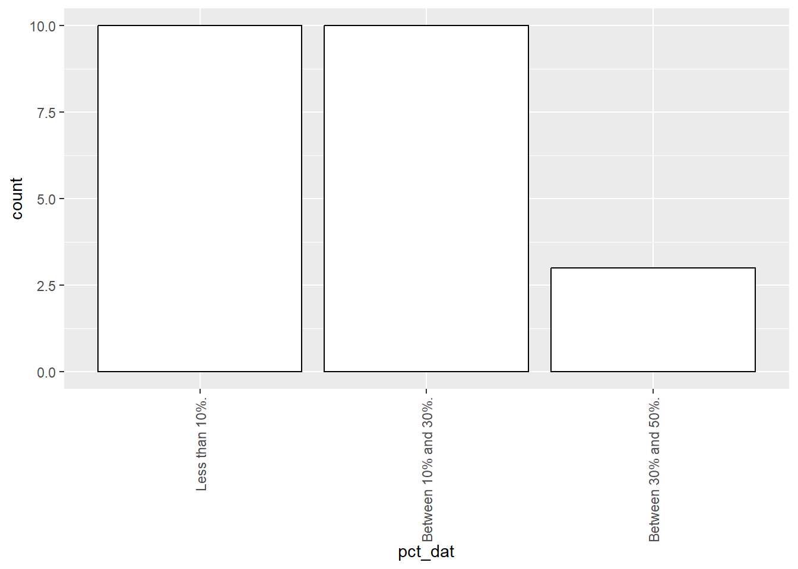
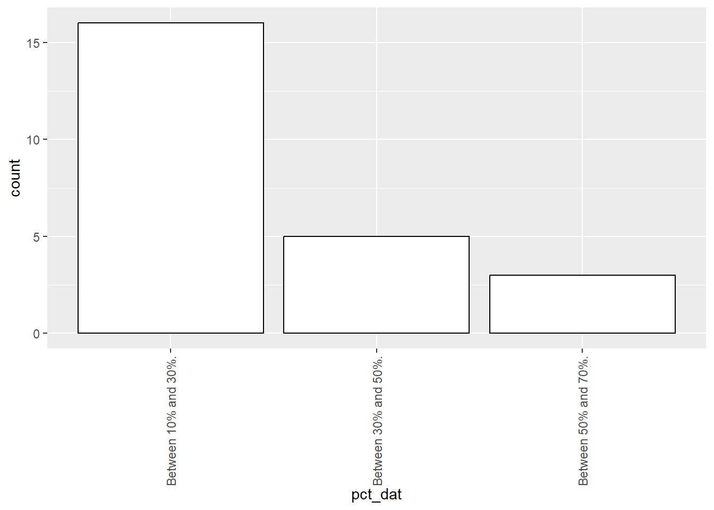
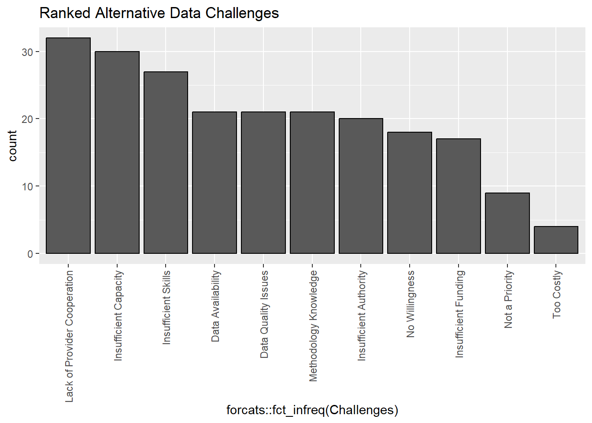

8 Alternative Data
In the world of official statistics, the term alternative data is used to describe sources of data other than traditional field-collected data that can be used to derive meaningful statistics.
These data sources often require more complicated tooling and methodology to work with, but offer certain benefits over field-collected data such as collection cost and comprehensiveness1.
In this section, we ask respondents about the extent to which they currently leverage alternative data sources in their CPI Production Systems. We also ask respondents about the primary challenges they face with respect to the adoption of Alternative Data in their CPI Production Systems.
8.1 Alternative Data Usage
Just under two thirds of respondents report not using alternative data sources at all. Of those that use alternative data sources, the majority of respondents report that “Less than 10%” or “Between 10% and 30%” of their CPI is derived from alternative data sources2.
Of those NSOs that don’t currently use alternative data sources, almost three quarters of them report that they would like to use alternative data sources. Of those NSOs that would like to use alternative data sources, we asked them how much alternative data they would like to use in their CPI Production Systems in an ideal scenario. We show this distribution below.
Warning in geom_bar(binwidth = 1, colour = "black", fill = "white"): Ignoring
unknown parameters: `binwidth`
It appears that most NSOs want between 10% and 50% of their CPI to be comprised of alternative data sources (by expenditure weight). Our suspicion is that leveraging alternative data may be challenging for certain components of the CPI, so even in an ideal scenario, NSOs may prefer to continue using field collected data for quality reasons.
8.2 Which Price Index Methods are Used on Alternative Data Sources
Of those respondents reporting that they currently use alternative data sources, we asked which price index methods are most commonly used3. The table below summarizes the number of respondents who are using each method4.
| GEKS | 6 |
| Time Dummy Hedonic | 4 |
| Hedonic | 6 |
| Other Multilateral | < 3 |
| Dynamic Sample | 5 |
| Fixed Sample | 16 |
| Other | 7 |
8.3 What Challenges are Faced in the Adoption of Alternative Data
We asked all respondents to rank the challenges they face in adopting alternative data sources(regardless of whether or not they are currently using alternative data in their CPI Production Systems).

Some alternative data challenges will be region-specific, such as lack of cooperation from data providers, authority to collect alternative data, and availability of alternative data.
However, some commonly cited issues such as Insufficient Skills and Methodology Knowledge can be addressed in part by effective knowledge sharing from domain experts.
For example, if a retailer agrees to share data with a NSO, the retailer can quite easily send weekly snapshots of their product transaction records. This dataset is much larger than anything that could realistically be collected by a field collection agent, but it also introduces new statistical issues (e.g., sample selection), and special tooling may be required to work with a dataset of this size.↩︎
These percentages refer to the share of the CPI by expenditure weight. For example, if an NSO uses alternative data sources to calculate the CPI for product categories that make up 10% of total household expenditures, then we would say that 10% of the CPI comes from alternative data sources.↩︎
For readers who are unfamiliar with the Consumer Prices business domain, these are techniques that are used to calculate period-over-period price changes from a given data source.↩︎
These choices are not mutually exclusive; one NSO may use multiple price index methods.↩︎